Time Profile Plots
plot-time-profile.Rmd1. Introduction
This vignette documents and illustrates workflows for producing Time
Profile plots using the ospsuite.plots library.
Time profile plots are commonly used to compare observed and simulated data over time. In these plots, observed data are typically represented as scatter points with error bars indicating population range or confidence intervals, while simulated data are displayed using lines with shaded ribbons representing population range or confidence intervals.
Basic documentation of the function can be found using:
?plotTimeProfile. The output of the function is a
ggplot object.
1.1 Setup
This vignette uses the ospsuite.plots and tidyr libraries. We will use the default settings of ospsuite.plots (see vignette(“ospsuite.plots”, package = “ospsuite.plots”)) but will adjust the legend position.
library(ospsuite.plots)
library(tidyr)
# Set Defaults
oldDefaults <- ospsuite.plots::setDefaults()
# Adjust legend position for better aesthetics
theme_update(legend.position = "top")
theme_update(legend.direction = "vertical")
theme_update(legend.box = "horizontal")
theme_update(legend.title = element_blank())1.2 Example Data
This vignette uses randomly generated example datasets provided by the package:
1.2.1 Simulated and Observed Data
The following datasets are used in the example:
-
simData1andobsData1: ‘exponential decay’ -
simData2andobsData2: ‘first order absorption with exponential decay’ -
simDataandobsData: combination ofsimData1andsimData2/obsData1andobsData2
simData1 <- exampleDataTimeProfile %>%
dplyr::filter(SetID == "DataSet1") %>%
dplyr::filter(Type == "simulated") %>%
dplyr::select(c("time", "values", "minValues", "maxValues", "caption"))
simData2 <- exampleDataTimeProfile %>%
dplyr::filter(SetID == "DataSet2") %>%
dplyr::filter(Type == "simulated") %>%
dplyr::select(c("time", "values", "minValues", "maxValues", "caption"))
simData <- rbind(simData1, simData2)
obsData1 <- exampleDataTimeProfile %>%
dplyr::filter(SetID == "DataSet1") %>%
dplyr::filter(Type == "observed") %>%
dplyr::select(c("time", "values", "sd", "maxValues", "minValues", "caption"))
obsData2 <- exampleDataTimeProfile %>%
dplyr::filter(SetID == "DataSet2") %>%
dplyr::filter(Type == "observed") %>%
dplyr::select(c("time", "values", "sd", "maxValues", "minValues", "caption"))
obsData <- rbind(obsData1, obsData2)
knitr::kable(head(simData), digits = 3, caption = "First rows of example data simData")| time | values | minValues | maxValues | caption |
|---|---|---|---|---|
| 0.0 | 15.000 | 12.000 | 18.000 | Simulated Data 1 |
| 0.1 | 14.851 | 11.857 | 17.857 | Simulated Data 1 |
| 0.2 | 14.703 | 11.715 | 17.714 | Simulated Data 1 |
| 0.3 | 14.557 | 11.576 | 17.573 | Simulated Data 1 |
| 0.4 | 14.412 | 11.438 | 17.433 | Simulated Data 1 |
| 0.5 | 14.268 | 11.301 | 17.294 | Simulated Data 1 |
-
simDataLloqandobsDataLloq: dataset with a column defining LLOQ.
simDataLloq <- exampleDataTimeProfile %>%
dplyr::filter(SetID == c("DataSet3")) %>%
dplyr::filter(Type == "simulated") %>%
dplyr::filter(dimension == "concentration") %>%
dplyr::select(c("time", "values", "caption"))
obsDataLloq <- exampleDataTimeProfile %>%
dplyr::filter(SetID == "DataSet3") %>%
dplyr::filter(Type == "observed") %>%
dplyr::filter(dimension == "concentration") %>%
dplyr::select(c("time", "values", "caption", "lloq", "error_relative"))-
simData2Dimension: dataset where the “values” column has mixed dimensions: “concentration” and “fraction”.
simData2Dimension <- exampleDataTimeProfile %>%
dplyr::filter(SetID == "DataSet3") %>%
dplyr::filter(Type == "simulated") %>%
dplyr::select(c("time", "values", "dimension", "caption"))
obsData2Dimension <- exampleDataTimeProfile %>%
dplyr::filter(SetID == "DataSet3") %>%
dplyr::filter(Type == "observed") %>%
dplyr::select(c("time", "values", "dimension", "caption", "lloq", "error_relative"))-
obsDataGender: observed dataset with gender information, andsimDataGender: a mean model presentation.
simDataGender <- exampleDataTimeProfile %>%
dplyr::filter(SetID == "DataSet4") %>%
dplyr::filter(Type == "simulated") %>%
dplyr::select(c("time", "values", "caption"))
obsDataGender <- exampleDataTimeProfile %>%
dplyr::filter(SetID == "DataSet4") %>%
dplyr::filter(Type == "observed") %>%
dplyr::select(c("time", "values", "caption", "gender"))1.2.2 MetaData
Metadata is a list that contains dimension and unit information for
dataset columns. If available, axis labels are set by this information.
If a time unit can be identified for the x-axis, breaks are set
according to this unit (see
?updateScaleArgumentsForTimeUnit).
metaData <- attr(exampleDataTimeProfile, "metaData")
knitr::kable(metaData2DataFrame(metaData), digits = 2, caption = "List of meta data")| time | values | |
|---|---|---|
| dimension | Time | Concentration |
| unit | h | mg/l |
2 Examples
The following sections demonstrate how to plot a Time Profile for specific scenarios.
2.1 Plot Simulated Data Only
2.1.1 Basic Example with Multiple Simulations
Datasets mapped to data are displayed as lines. The aesthetic
groupby, mapped in the example to the column caption,
groups profiles by the caption column. This means
caption is internally mapped to all aesthetics defined in
the variable groupAesthetics. By default, these are
color, linetype, shape (only
relevant for observed data), and fill.
plotTimeProfile(
data = simData,
metaData = metaData,
mapping = aes(
x = time,
y = values,
groupby = caption
)
)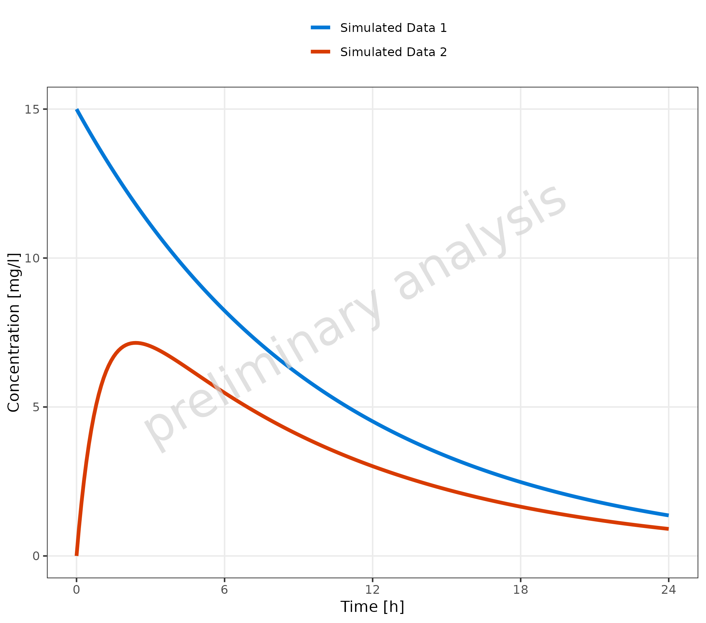
2.1.2 Multiple Simulations with Confidence Interval
Mapping ymin and ymax will add a ribbon to
the time profile, indicating a prediction confidence interval or
population variance.
plotTimeProfile(
data = simData,
metaData = metaData,
mapping = aes(
x = time,
y = values,
ymin = minValues,
ymax = maxValues,
groupby = caption
)
)2.2 Plot Observed Data Only
2.2.1 Basic Example with Multiple Observed Data Sets
A dataset mapped to observed data is displayed as points.
plotTimeProfile(
observedData = obsData,
metaData = metaData,
mapping = aes(
x = time,
y = values,
groupby = caption
)
)2.2.2 Observed Data Sets with Confidence Interval
Mapping ymin and ymax adds error bars.
plotTimeProfile(
observedData = obsData,
metaData = metaData,
mapping = aes(
x = time,
y = values,
ymin = minValues,
ymax = maxValues,
groupby = caption
)
)
2.2.3 Usage of Aesthetic “Error”
The dataset includes a column with the standard deviation
sd. If mapped to ‘error’, this variable will be used to
create corresponding ymin and ymax values for
the error bars ymin = values - sd and
ymax = values + sd. If yscale = 'log',
ymin values below 0 are set to y.
Additionally, error_relative can be used where a
multiplicative error is assumed:
ymin = values / error_relative and
ymax = values * error_relative.
plotTimeProfile(
observedData = obsData,
metaData = metaData,
mapping = aes(
x = time,
y = values,
error = sd,
groupby = caption
)
)
2.2.4 Observed Data with LLOQ
If lloq is mapped to a column indicating the lower limit
of quantification, a horizontal line for the lloq values is
displayed, and all values below lloq are plotted with
decreased alpha. As the comparison is done by row, multiple
lloq values are possible.
plotTimeProfile(
observedData = obsDataLloq,
metaData = metaData,
mapping = aes(
x = time,
y = values,
groupby = caption,
error_relative = error_relative,
groupby = caption
)
)
#> Warning: Duplicated aesthetics after name standardisation:
#> groupby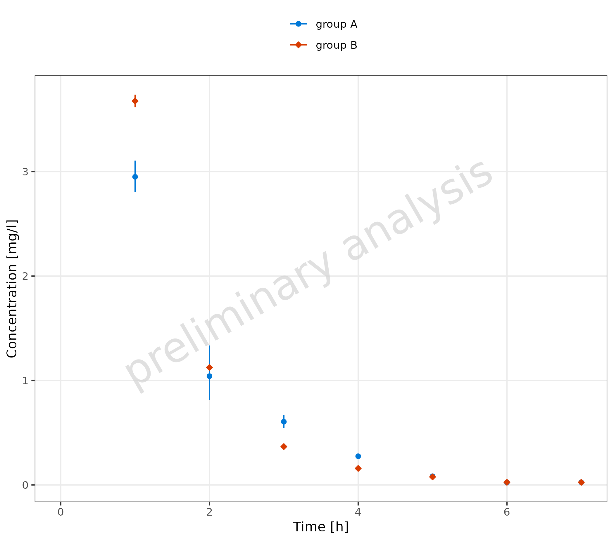
2.2.5 Omit Data Points Flagged as Missing Dependent Variable (MDV)
The following code adds a new column where all values higher than 10
are flagged as mdv. This leads to a plot without any
observed data points higher than 10 (removing the first
observation).
mdvData <- obsData
mdvData$mdv <- mdvData$values > 10
plotTimeProfile(
observedData = mdvData,
metaData = metaData,
mapping = aes(
x = time,
y = values,
ymin = minValues,
ymax = maxValues,
groupby = caption
)
)2.3 Plot Simulated and Observed Data
By plotting simulated and observed data together, you can often find pairs of corresponding datasets. This can be done using a common legend entry (see section 2.3.1) or by defining a mapping table, where each observed dataset is mapped to one simulated dataset (see section 2.3.2). There may also be examples with independent datasets (see section 2.3.3).
2.3.1 Corresponding Simulated and Observed Datasets with Common Legend Entry
In this example, we create a new column with a common caption for
simulated and observed data. This column is then mapped to the aesthetic
groupby, leading to a single common legend for both
observed and simulated data.
# Create datasets with common caption
simData <- data.frame(simData) %>%
dplyr::mutate(captionCommon = gsub("Simulated ", "", caption))
obsData <- data.frame(obsData) %>%
dplyr::mutate(captionCommon = gsub("Observed ", "", caption))
plotTimeProfile(
data = simData,
observedData = obsData,
metaData = metaData,
mapping = aes(
x = time,
y = values,
ymin = minValues,
ymax = maxValues,
groupby = captionCommon
)
)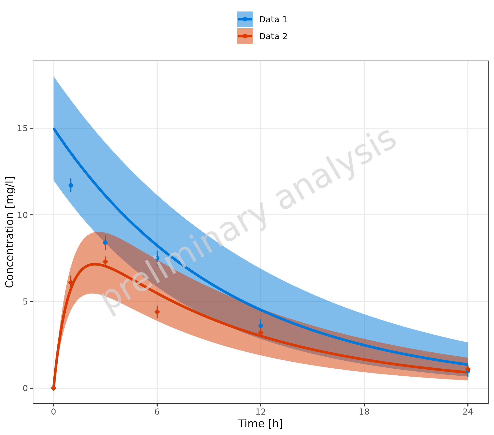
2.3.2 Corresponding Simulated and Observed Datasets with Separate Legend Entries and Mapping Table
In this example, we create a mapping table with one column for
observed and one column for simulated. This
table is passed to the function as the input variable
mapSimulatedAndObserved.
mapSimulatedAndObserved <- data.frame(
simulated = unique(simData$caption),
observed = unique(obsData$caption)
)
knitr::kable(mapSimulatedAndObserved)| simulated | observed |
|---|---|
| Simulated Data 1 | Observed Data 1 |
| Simulated Data 2 | Observed Data 2 |
plotTimeProfile(
data = simData,
observedData = obsData,
metaData = metaData,
mapping = aes(
x = time,
y = values,
ymin = minValues,
ymax = maxValues,
groupby = caption
),
mapSimulatedAndObserved = mapSimulatedAndObserved
)If not all simulated datasets have corresponding observed datasets (or vice versa), it is possible to fill the mapping table with empty strings for the missing datasets. The empty strings should be at the end of the table.
mapSimulatedAndObserved <- data.frame(
simulated = unique(simData$caption),
observed = c(unique(obsData1$caption), "")
)
knitr::kable(mapSimulatedAndObserved)| simulated | observed |
|---|---|
| Simulated Data 1 | Observed Data 1 |
| Simulated Data 2 |
plotTimeProfile(
data = simData,
observedData = obsData1,
metaData = metaData,
mapping = aes(
x = time,
y = values,
ymin = minValues,
ymax = maxValues,
groupby = caption
),
mapSimulatedAndObserved = mapSimulatedAndObserved
)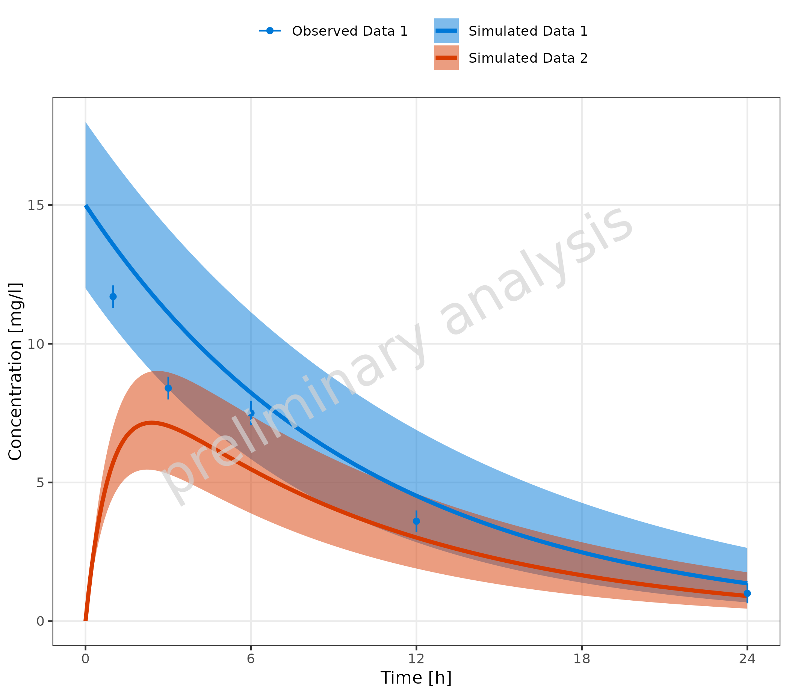
2.3.3 Independent Simulated and Observed Datasets
The example below shows individual observed data compared to one
simulation. Here, a mapping between observed and simulated data doesn’t
make sense. The groupby aesthetic is used to group the
observed data by color, fill, and shape. To avoid an extra color for the
simulated line, the line color is set by geomLineAttributes
as an attribute and not as an aesthetic. The simulated line inherits the
linetype aesthetic from the groupby aesthetic,
adding a linetype legend for the simulated data.
plotTimeProfile(
data = simDataGender,
observedData = obsDataGender,
metaData = metaData,
mapping = aes(
x = time,
y = values,
groupby = caption
),
geomLineAttributes = list(color = "black")
) +
theme(legend.position = "right") +
labs(
color = "Observed Data",
shape = "Observed Data",
fill = "Observed Data",
linetype = "Simulation"
) +
theme(legend.title = element_text())
#> Ignoring unknown labels:
#> • linetype : "Simulation"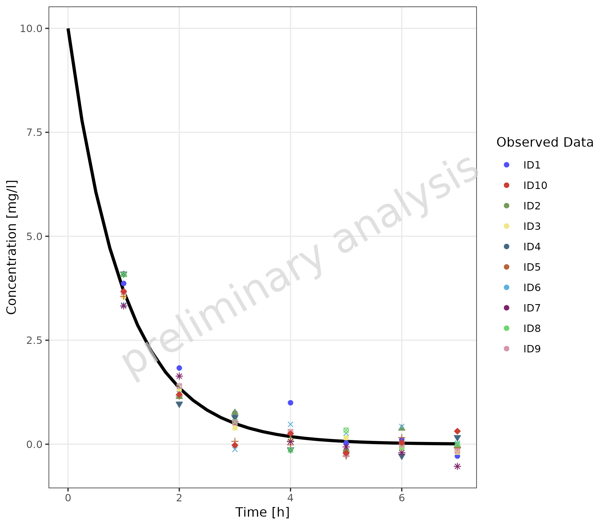
2.3.4 Multiple Simulations and Observed Data Sets without Legends
To map groupby with an empty variable
groupAesthetics leads to a plot without legends.
plotTimeProfile(
data = simData,
observedData = obsData,
metaData = metaData,
mapping = aes(
x = time,
y = values,
groupby = caption
),
groupAesthetics = c()
)2.3.5 Observed Data with Shape as Gender
In this example, observed data is used as both simulated and observed data, connecting the different data points with a thin line.
plotTimeProfile(
data = obsDataGender,
observedData = obsDataGender,
metaData = metaData,
mapping = aes(
x = time,
y = values,
groupby = caption,
shape = gender
),
geomLineAttributes = list(linetype = "solid", linewidth = 0.5)
) +
theme(legend.position = "right")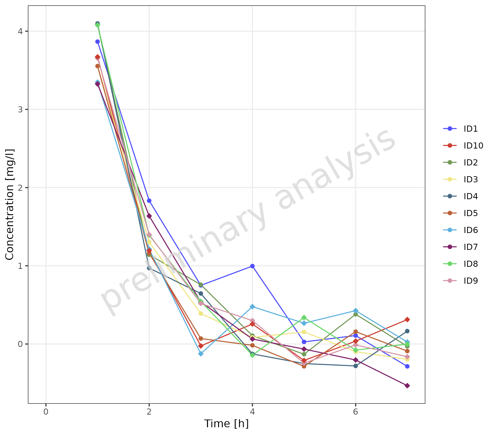
A similar plot can be produced by combining caption and
gender with interaction.
plotTimeProfile(
data = obsDataGender,
observedData = obsDataGender,
metaData = metaData,
mapping = aes(
x = time,
y = values,
groupby = interaction(caption, gender)
),
geomLineAttributes = list(linetype = "solid", linewidth = 0.5)
) +
theme(legend.position = "right")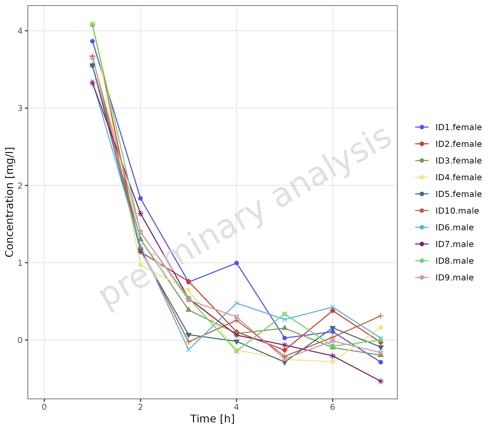
2.3.6 Data with Secondary Axis
In this example, a plot is generated with concentration on the left
y-axis and fraction on the right y-axis. First, the
metaData variable has to be adjusted. For the primary
y-axis, the column “values” is mapped, and metaData
provides the dimension “Concentration” for this column. A new entry “y2”
is added for the secondary y-axis.
metaDataY2 <- list(
time = list(dimension = "Time", unit = "h"),
values = list(dimension = "Concentration", unit = "mg/l"),
y2 = list(dimension = "Fraction", unit = "")
)The mapping y2axis must be logical. In this example, it
is (dimension == "fraction"). For the primary y-axis
(concentration), a log scale is displayed, and for the secondary
(fraction), a linear scale is used. The limits of the secondary axis are
set to [0, 1].
plotTimeProfile(
data = simData2Dimension,
observedData = obsData2Dimension,
mapping = aes(
x = time,
y = values,
error_relative = error_relative,
lloq = lloq,
y2axis = (dimension == "fraction"),
groupby = dimension,
shape = caption
),
metaData = metaDataY2,
yscale = "log",
yscale.args = list(limits = c(0.01, NA)),
y2scale = "linear",
y2scale.args = list(limits = c(0, 1))
) +
theme(
axis.title.y.right = element_text(angle = 90),
legend.position = "right",
legend.box = "vertical"
)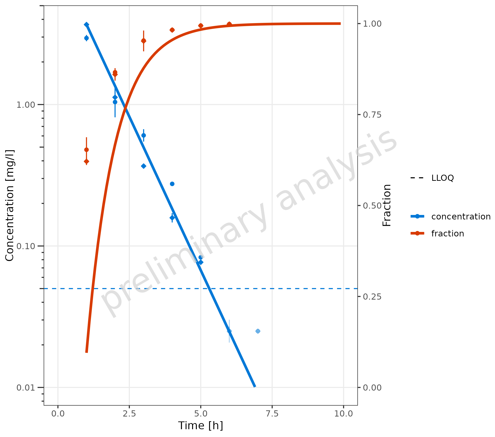
3. Plot Configuration
3.1 Example for Changing Geom Attributes
The plot from section 2.3.2 was adjusted using geom attributes:
-
geomLineAttributes = list(linetype = 'solid'): The lines used for the simulated data are set to solid in both datasets. Note that the line type for the error bars and ribbon edges remains unchanged. -
geomErrorbarAttributes = list(): The default settings forgeomErrorbarAttributes, width = 0, were removed so that the bar caps are now visible. -
geomRibbonAttributes = list(alpha = 0.1): The shade of the ribbons was decreased by setting the alpha to 0.1; the default value for color = NA was omitted, making the edges visible. -
geomPointAttributes = list(size = 7): The size of the symbols was increased.
mapSimulatedAndObserved <- data.frame(
simulated = unique(simData$caption),
observed = rev(unique(obsData$caption))
)
plotTimeProfile(
data = simData,
observedData = obsData,
metaData = metaData,
mapping = aes(
x = time,
y = values,
ymin = minValues,
ymax = maxValues,
groupby = caption
),
geomLineAttributes = list(linetype = "solid"),
geomErrorbarAttributes = list(width = 3),
geomRibbonAttributes = list(alpha = 0.1),
geomPointAttributes = list(size = 7),
mapSimulatedAndObserved = mapSimulatedAndObserved
)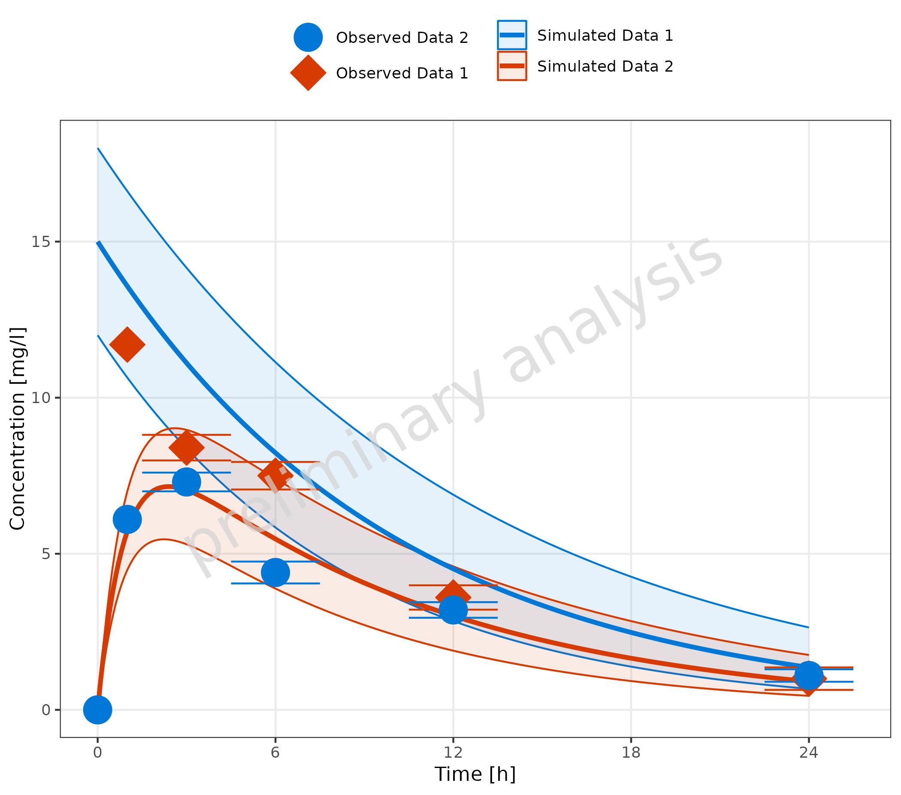
3.2 Example for Changing Color Scales
3.2.1 Without Mapping Table
For plots showing only simulated or observed data, or plots with a
common legend (see section 2.3.1), the colors are changed using
ggplot2 functions like
scale_color_manual.
Below, the plot from section 2.3.1 is repeated.
# Create datasets with common caption
simData <- data.frame(simData) %>%
dplyr::mutate(captionCommon = gsub("Simulated ", "", caption))
obsData <- data.frame(obsData) %>%
dplyr::mutate(captionCommon = gsub("Observed ", "", caption))
plotTimeProfile(
data = simData,
observedData = obsData,
metaData = metaData,
mapping = aes(
x = time,
y = values,
ymin = minValues,
ymax = maxValues,
groupby = captionCommon
)
) +
scale_color_manual(values = c("Data 1" = "darkred", "Data 2" = "darkgreen")) +
scale_fill_manual(values = c("Data 1" = "red", "Data 2" = "green"))3.2.2 With Mapping Table
It is possible to add columns with aesthetics to the table used to
map simulated and observed data. The column headers must correspond to
one of the aesthetics defined in groupAesthetics.
In the example below, this is done for ‘color’ and ‘fill’:
# Define Data Mappings
mapSimulatedAndObserved <- data.frame(
simulated = unique(simData$caption),
observed = unique(obsData$caption),
color = c("darkred", "darkgreen"),
fill = c("red", "green")
)
knitr::kable(mapSimulatedAndObserved)| simulated | observed | color | fill |
|---|---|---|---|
| Simulated Data 1 | Observed Data 1 | darkred | red |
| Simulated Data 2 | Observed Data 2 | darkgreen | green |
plotTimeProfile(
data = simData,
observedData = obsData,
metaData = metaData,
mapping = aes(
x = time,
y = values,
ymin = minValues,
ymax = maxValues,
groupby = caption
),
mapSimulatedAndObserved = mapSimulatedAndObserved
)Changing the scales when using the observed simulation mapping table
can also be done by adding scales manually, but it is a bit more
complicated. If mapSimulatedAndObserved is not null, a
reset of all relevant scales is done before plotting the observed data.
The scales for the simulated data must be set before this reset. You
have to call plotTimeProfile two times:
- Call
plotTimeProfile()for simulated data only. - Set scales for simulated data.
- Call
plotTimeProfile()for observed data only with the simulated plot as inputplotObject. - Set scales for observed data.
mapSimulatedAndObserved <- data.frame(
simulated = unique(simData$caption),
observed = rev(unique(obsData$caption))
)
# Define Data Mappings
mapping <- aes(
x = time,
y = values,
ymin = minValues,
ymax = maxValues,
groupby = caption
)
plotObject <- plotTimeProfile(
data = simData,
metaData = metaData,
mapping = mapping,
mapSimulatedAndObserved = mapSimulatedAndObserved
) +
scale_color_manual(values = c("Simulated Data 1" = "darkred", "Simulated Data 2" = "darkgreen")) +
scale_fill_manual(values = c("Simulated Data 1" = "red", "Simulated Data 2" = "green"))
plotObject <- plotTimeProfile(
plotObject = plotObject,
observedData = obsData,
mapping = mapping,
mapSimulatedAndObserved = mapSimulatedAndObserved
) +
scale_color_manual(values = c("Observed Data 1" = "darkred", "Observed Data 2" = "darkgreen"))
#> Scale for x is already present.
#> Adding another scale for x, which will replace the existing scale.
#> Scale for y is already present.
#> Adding another scale for y, which will replace the existing scale.
plot(plotObject)3.3 Example for Adjusting X and Y Scale
In the example, we set the scale for the y-axis to log scale. By default, a time profile plot starts at 0; here, the defaults were overwritten, and the breaks were set manually.
plotTimeProfile(
data = simData %>% dplyr::filter(values > 0),
metaData = metaData,
mapping = aes(
x = time + 24,
y = values,
groupby = caption
),
yscale = "log",
xscale.args = list(limits = c(24, 48), breaks = seq(24, 48, 3))
)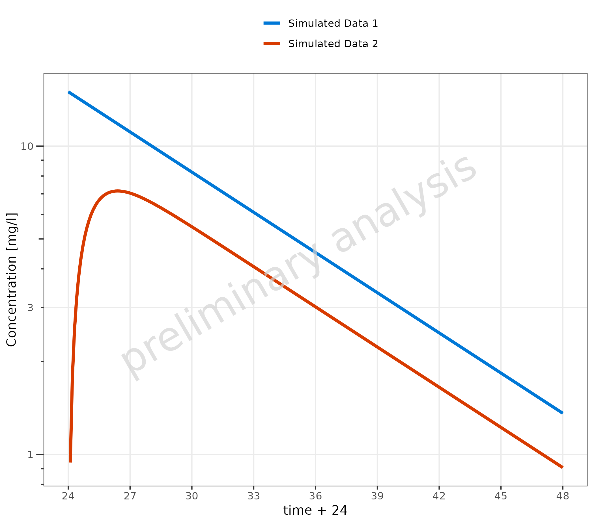
3.4 Adjust Time Unit
The breaks of the time axis are set according to the units provided
by the variable metaData.
Below, we show the same plot with four different time units:
plotlist <- list()
for (unit in c("h", "day(s)", "weeks(s)", "month(s)")) {
metaData$time$unit <- unit
plotlist[[unit]] <- plotTimeProfile(
data = simData,
metaData = metaData,
mapping = aes(
x = time,
y = values,
groupby = caption
)
) + labs(title = paste("Time unit:", unit)) + theme(legend.position = "none")
}
cowplot::plot_grid(plotlist = plotlist, labels = "AUTO")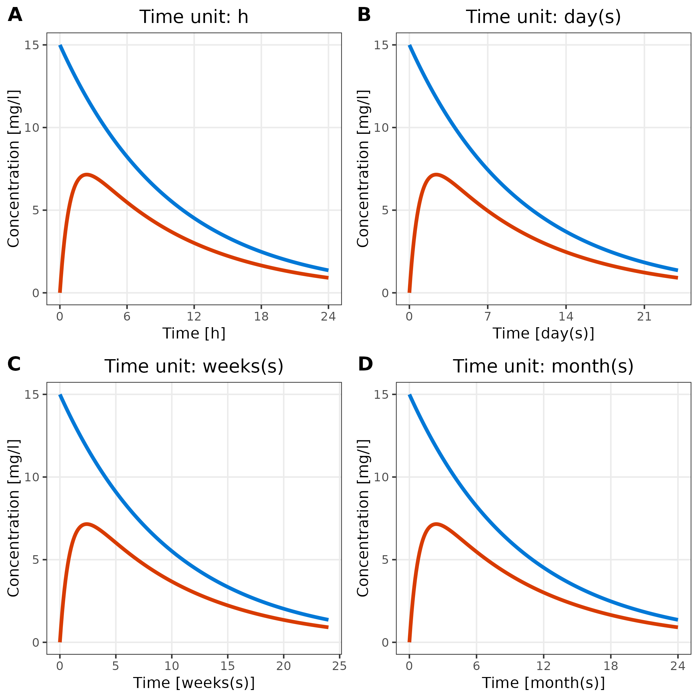